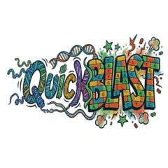

R is widely used for data analysis, but running NCBI’s standard BLAST tools within R has traditionally been slow. Because the NCBI C++ toolkit is massive and inflexible, existing R packages are forced to run BLAST as an external subprocess, which creates major read/write bottlenecks.
QuickBLAST solves this by building a direct bridge between R and the NCBI C++ toolkit via Rcpp. By bypassing traditional text-based formatting and transporting data directly into memory using Apache Arrow, QuickBLAST performs sequence comparisons exceptionally fast.
sudo apt install libsqlite3-dev libeigen3-dev libboost-dev libfontconfig1-dev libcurl4-openssl-dev libharfbuzz-dev libfribidi-dev libfreetype6-dev libpng-dev libtiff5-dev libjpeg-dev cmake (Linux)Written in C++ and interfaced with R using Rcpp, the package is wrapped directly around the NCBI-C++ Toolkit’s BLAST-specific classes and Apache Arrow, exposing these functions to R with C linkage.
The main difference between this package and legacy wrappers is the data lifecycle. Instead of waiting for a sequence alignment to finish before parsing a TSV, QuickBLAST sets up a sophisticated pipeline:
devtools::install_github("https://github.com/vizkidd/QuickBLAST", force=T)List of available options can be checked with QuickBLAST::GetAvailableBLASTOptions(). Enums used by QuickBLAST in C++ are not exposed in R and only integers are used, check QuickBLAST::GetQuickBLASTEnums().
QuickBLAST uses “instances” to maintain search parameters (like E-values and programs) in the background.
library(QuickBLAST)
# Create a Nucleotide (blastn) instance
blastn_inst <- QuickBLAST::CreateQuickBLASTInstance(
seq_type = 0, strand = 0, program = "blastn", options = "-evalue 100000"
)
# Create a Protein (blastp) instance
blastp_inst <- QuickBLAST::CreateQuickBLASTInstance(
seq_type = 1, strand = 0, program = "blastp", save_sequences = FALSE, save_hsp_sequences = TRUE
)You can pass raw character strings directly to QuickBLAST without needing to write temporary FASTA files to your disk. Results are returned natively as an Rcpp::List.
QuickBLAST::BLAST2Seqs(
blastn_inst,
query = "AAAAAAAAAAAATTTTTTTTTTTTGGGGGGGGGGGCCCCCCCCC",
subject = "TTTTTTTTTTTGGGGGGGGGGGG"
)QuickBLAST makes large-scale genomics easy with built-in file and database tools.
QuickBLAST::BLAST2Files(blastn_inst, query = "query.fasta", subject = "genome.fasta")
# 1. Compile the database
QuickBLAST::MakeBLASTDB(
in_seq = "reference_genome.fasta",
db_type = "nucl",
out_db = "my_custom_db"
)
# 2. Search against it
QuickBLAST::BLAST2DBs(blastn_inst, query = "query.fasta", db = "my_custom_db")If you don’t want to download databases, you can query NCBI’s remote servers directly from R:
QuickBLAST::RemoteBLAST(
blastp_inst,
query_input="MQILLVEDDNTLFQELKKELEQWDFNVAGIEDFG...",
database= "pdb",
input_type=1,
return_values=TRUE
)Because QuickBLAST opens direct connections to C++ libraries, it includes utility functions to track and clean up memory.
# See how many instances are running
QuickBLAST::GetInstanceCount()
# Delete a specific instance by its ID
QuickBLAST::DeleteQuickBLASTInstance(1)Inherits and follows the licenses of Apache Arrow and NCBI-C++-Toolkit. Parts of the code, optimizations and documentation in the recent versions of QuickBLAST were written with the help of Google Gemini AI. Developed and maintained by vizkidd.